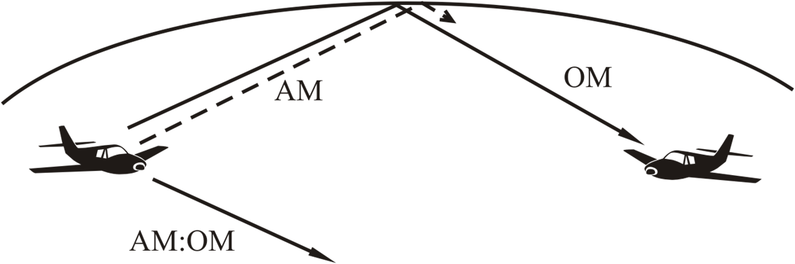
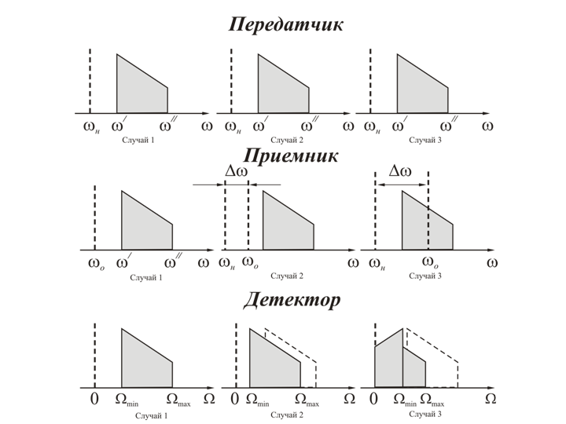
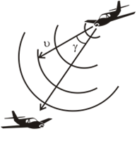
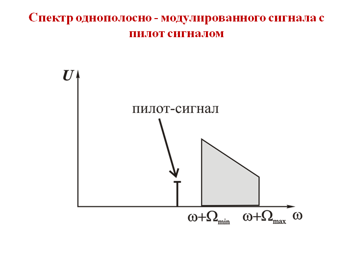

Двухполосная модуляция с подавленной несущей. Однополосная модуляция.
Первым преимуществом такой модуляции является сужение спектра частот, занимаемого передаваемым сообщением. При передаче сообщения с помощью однополосного сигнала осуществляется перенос спектра модулирующего сигнала в область высоких частот. Поэтому для передачи сигнала в этом случае требуется полоса частот в два раза уже , чем при амплитудной модуляции. Это позволяет увеличить количество радиостанции, одновременно работающих в коротковолновом диапазоне.
Вторым достоинством однополосной модуляции является лучшее использование мощности передатчика. При амплитудной модуляции амплитуда боковых полос изменяется прямо пропорционально коэффициенту модуляции
Мощность однополосного передатчика используется в 4 раза эффективнее, чем мощность передатчика с амплитудной модуляцией. Кроме этого, за счёт сужения полосы пропускания однополосного приёмника в раза, увеличивается отношение сигнал/шум на его входе, что эквивалентно увеличению мощности сигнала в 2 раза.
Полученный восьмикратный выигрыш в мощности при переходе от амплитудной модуляции к однополосной имеет место при поверхностном распространении радиоволн. При радиосвязи отраженным лучом, вследствие селективных замираний составляющих спектра амплитудно-модулированного сигнала, уровень сигнала на входе приемника замет-но уменьшается. Однополосный сигнал меньше подвержен замираниям. Это обеспечивает выигрыш по мощности, близкий к двум.

Третьим достоинством однополосной модуляции является снижение мощности потребляемой передатчиком. При отсутствии модуляции, то есть в паузах при передаче информации, однополосной передатчик не излучает, а следовательно и не потребляет мощности. В свою очередь амплитудно-модулированный передатчик в паузах излучает немодулированную несущую и потребляет при этом какую-то мощность. Поэтому, в настоящее время однополосная модуляция является основным видом модуляции при передаче сообщений в коротковолновом диапазоне.
Основным недостатком однополосной модуляции является требование высокой стабильности частоты в радиолинии. Так как однополосный сигнал является сигналом с подавленной несущей, то при приёме необходимо восстановить несущую. Точность восстановления зависит от требования к качеству передачи и составляет +1…+2 Гц для приёма высококачественных музыкальных передач и +10 Гц для телефонных сообщений.
Максимально допустимое рассогласование не должно превышать 100…200 Гц. Рассогласование между истинным значением несущей и восстановленным значением называют рассинхронизмом. Так как однополосная модуляция есть перенос спектра звукового сообщения в область высоких частот на величину wн, то при приёме необходимо произвести обратное преобразование. Это осуществляется вычитанием из принимаемого спектра w¢ и w² колебаний с частотой w0 = wн

При точном синхронизме wн = wо, спектр колебаний на выходе детектора точно совпадает с передаваемым спектром, то есть приём осуществляется без искажений. При наличии рассинхронизма, спектр в приёмнике сдвигается на величину Dw = wo – wн, в результате в спектре появляются составляющие с частотой ниже Wmin и исчезают составляющие с частотой, близкой Wmax. Когда Dw > Wmin наблюдается частичная инверсия спектра.
Вторым недостатком является сильное влияние эффекта Доплера при работе с подвижными объектами


Таким образом, на сегодняшнем занятии рассмотрены вопросы: Общие сведения об аналоговых системах связи. Амплитудная модуляция. Частотная модуляция. Фазовая модуляция. Способы представления модулированных сигналов. Двухполосная модуляция с подавленной несущей. Однополосная модуляция.